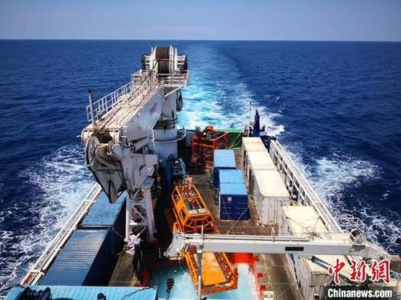

 这一深海试验的成功，填补了中国海底钻探深度大于100米、具备保压取芯功能的深海海底钻机装备的空白，标志着中国在这一技术领域已达到世界领先水平。
据悉，“海牛Ⅱ号”海底大孔深保压取芯钻机系统是中国重点研发计划“深海关键技术与装备专项”课题，目标是研制作业水深不小于2000米，钻探深度不小于200米，保压成功率不小于60%，可有效满足中国海底天然气水合物(可燃冰)资源勘探的海底大孔深保压取芯钻机系统。
“海牛Ⅱ号”钻机本体高7.6米，腰围10米，体重12吨，水下重量10吨，是目前中国水下重量最重的地质勘探科考设备。它看似庞然大物，到了海底就像泥鳅一样灵活。
从广州港口出发，“海牛Ⅱ号”搭载海洋地质二号科考船于北京时间4月3日抵达目标工区并开展深海作业联调联试。海试作业于7日上午6时左右进行，8时30分，“海牛Ⅱ号”成功坐底在水深2060米的海底，在海底完成姿态调平后，进行了约15个小时的目标层保压取芯钻探作业。
 “海牛Ⅱ号”首席科学家万步炎教授介绍，相较目前世界上深海海底钻机海底100余米的最大钻探深度，“海牛Ⅱ号”本次海底目标层保压取芯钻探深度达到231米，是目前世界上唯一一台海底钻探深度大于200米的深海海底钻机。它采用全新的基于海底钻机绳索取芯技术的水合物保压取芯原理、保压取芯技术与工艺、轻量化设计技术，以及海底复杂地层智能钻进专家系统，使得钻探效率、取芯质量、保压成功率显著提高，钻机重量较国外同类钻机大幅减少，水下收放作业难度大幅降低。这次深海试验的成功，意味着中国在该技术领域已达到世界领先水平。
“海牛Ⅱ号”首席科学家万步炎教授介绍，相较目前世界上深海海底钻机海底100余米的最大钻探深度，“海牛Ⅱ号”本次海底目标层保压取芯钻探深度达到231米，是目前世界上唯一一台海底钻探深度大于200米的深海海底钻机。它采用全新的基于海底钻机绳索取芯技术的水合物保压取芯原理、保压取芯技术与工艺、轻量化设计技术，以及海底复杂地层智能钻进专家系统，使得钻探效率、取芯质量、保压成功率显著提高，钻机重量较国外同类钻机大幅减少，水下收放作业难度大幅降低。这次深海试验的成功，意味着中国在该技术领域已达到世界领先水平。
万步炎及其科研团队从2000年开始研制深海海底钻机，2003年成功研制出中国首台深海浅层岩芯取样钻机，并成功在海底下钻0.7米，钻获第一个岩芯样品，开启了中国自主研发深海海底钻机的历程。随后十几年，万步炎带领其团队扎根这一技术领域执着攻关，于2010年研制成功深海中深孔岩芯取样钻机，海底钻探深度20米；2015年成功研发“海牛号”海底多用途钻机，改写了中国深海海底钻机钻探深度纪录。所有关键技术均为自主研发，目前该团队已取得125项国家专利，4项国际发明专利。
据了解，万步炎及其团队已把目光瞄向11000米水深的马里亚纳海沟，力争在未来几年内实现11000米级水深地质钻探取样，为揭示海沟扩张演化规律和独特的生态系统及生命过程演化规律提供利器。